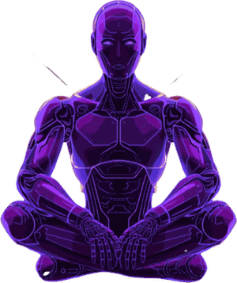

Acesso ao Mentor
Digite o e-mail usado na assinatura pra liberar o app.
Liberar acesso
Ainda não assina? Assine aqui
♦
♣
♠

O MENTOR
IA das Apostas
Início
Histórico
Ferramentas
Estatísticas
Reconectando…
Bom dia, Estrategista
domingo, 02 de agosto
Estratégia em destaque agora
Aguardando padrão
Nenhuma estratégia disparada no momento
Sinal
Aguardando a próxima entrada…
Resumo de Hoje
Carregando...
--
Win
--
G1
--
Branco
--
Loss
Ver histórico completo →